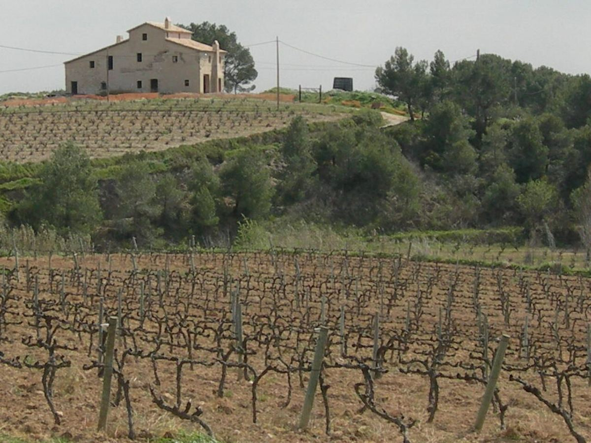

EFFERVESCENT
Le Cava est la dénomination d'origine des vins effervescents espagnols élaborés selon la méthode traditionnelle, avec seconde fermentation en bouteille. Si sa production se concentre dans le Penedès, autour de Sant Sadurní d'Anoia, sa zone de production couvre des communes de plusieurs communautés autonomes.

L'élaboration de vins effervescents selon la méthode traditionnelle commença en Catalogne dans la seconde moitié du XIXe siècle. En 1872, Josep Raventós, de la maison Codorníu, élabora à Sant Sadurní d'Anoia les premières bouteilles selon la méthode employée en Champagne. Après le phylloxéra, une grande partie du vignoble du Penedès fut replantée avec des cépages blancs destinés aux effervescents. Pendant des décennies, ces vins furent appelés champán ou xampany, jusqu'à l'adoption du nom de cava, en référence aux caves souterraines où vieillissent les bouteilles. La dénomination d'origine Cava fut réglementée en 1986 et, contrairement à d'autres appellations, elle se définit par la méthode d'élaboration et par une liste de communes autorisées situées dans différentes régions. En 2019, un groupe de producteurs du Penedès quitta l'appellation pour créer la marque collective Corpinnat.
La grande majorité de la production se concentre en Catalogne, surtout dans le Penedès, mais la zone protégée comprend aussi des communes d'Aragon, de La Rioja, de Navarre, du Pays basque, de la Communauté valencienne et d'Estrémadure. Un zonage approuvé en 2020 distingue quatre grandes zones : Comtats de Barcelona, qui réunit l'essentiel de la production ; Valle del Ebro ; Viñedos de Almendralejo, en Estrémadure ; et Zona de Levante, autour de Requena.
Le Cava est élaboré à partir d'un vin de base auquel on ajoute la liqueur de tirage, mélange de sucre et de levures. La seconde fermentation a lieu dans la bouteille elle-même, où le vin reste en contact avec les lies pendant toute la durée de l'élevage. On procède ensuite au remuage, pour rassembler les dépôts dans le col, puis au dégorgement, qui les expulse. Selon la quantité de liqueur d'expédition ajoutée, le Cava peut être Brut Nature, Extra Brut, Brut, Extra Seco, Seco, Semiseco ou Dulce.
Le Cava de Guarda exige au minimum neuf mois de vieillissement en bouteille. Le Cava de Guarda Superior regroupe les catégories Reserva, avec au moins 18 mois ; Gran Reserva, avec au moins 30 mois ; et Cava de Paraje Calificado, avec au moins 36 mois et issu d'un lieu-dit précis. Les Cavas de Guarda Superior doivent indiquer le millésime et respecter des exigences supplémentaires quant à l'âge des vignes et aux rendements, ainsi que l'obligation d'une viticulture biologique.
Les cépages blancs traditionnels sont le macabeo, le xarel·lo et le parellada, auxquels s'ajoutent le chardonnay et la malvasía (subirat parent). Pour les rosés, on utilise le grenache, le monastrell, le pinot noir et le trepat, cépage rouge autochtone de Catalogne.